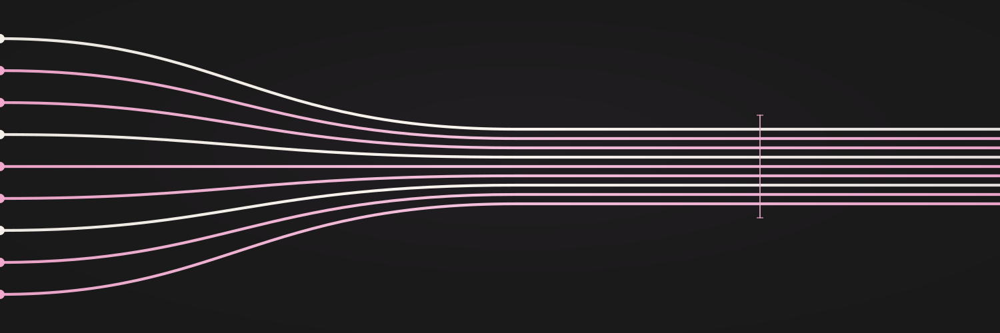
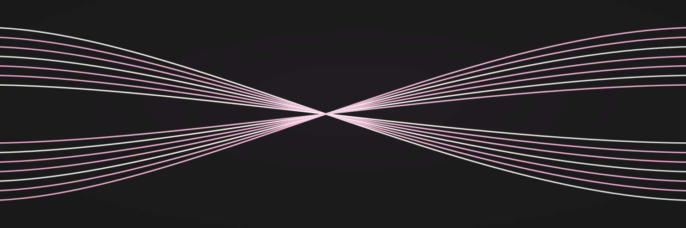
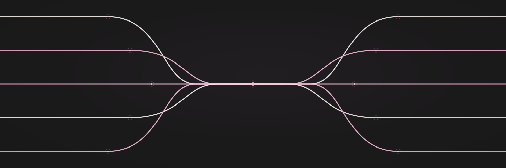
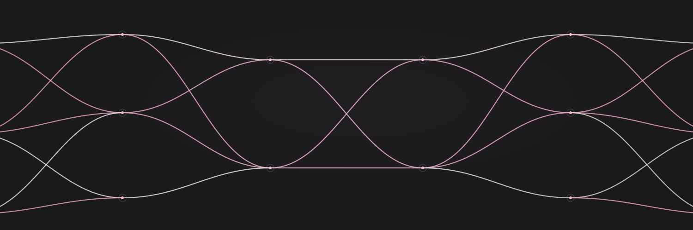
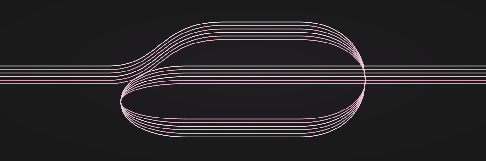

01 / In commonNine independent strands find a shared direction, closest to the reference.SVG ↓PNG ↓
02 / Crossing pathsTwo fine bundles cross and exchange direction in a symmetrical woven connection.SVG ↓PNG ↓
03 / Shared rootsFine branching wires spread from a common point, like roots or neural pathways.SVG ↓PNG ↓
04 / Collective intelligenceSparse neural-style layers connect through soft curved paths with no dominant node.SVG ↓PNG ↓
05 / Feedback loopContinuous paths circulate through a shared loop and continue beyond the frame.SVG ↓PNG ↓